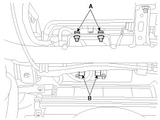

Repair Procedures
Removal
1. Disconnect the battery negative cable and wait for at least three minutes before beginning work.
2. Remove the glove box housing.
3. Disconnect the passenger airbag connector (B) and remove the PAB mounting bolts (A).

4. Remove the crash pad.
NOTE:
Replace the crash pad which that has been damaged after the PAB has been deployed.
5. Remove the heater duct from the crash pad.
6. Remove the mounting bolts from the crash pad. And then remove the passenger airbag.
CAUTION:
The removed airbag module should be stored in a clean, dry place with the airbag cushion up.
Installation
1. Remove the ignition key from the vehicle.
2. Disconnect the battery negative cable from battery and wait for at least three minutes before beginning work.
3. Place the passenger airbag on the crash pad and tighten the passenger airbag mounting bolts.
Tightening torque:
8.0 - 12.0 N.m (0.8 - 1.2 kgf.m, 5.8 - 8.7 lb-ft)
4. Install the heater duct to the crash pad.
5. Install the crash pad.
6. Tighten the passenger airbag crash pad mounting bolts.
Tightening torque:
7.8 - 11.8 N.m (0.8 - 1.2 kgf.m, 5.8 - 8.7 lb-ft)
7. Connect the passenger airbag harness connector to the SRS main harness connector.
8. Reinstall the glove box.
9. Reconnect the battery negative cable.
10. After installing the passenger airbag (PAB), confirm proper system operation:
A. Turn the ignition switch ON; the SRS indicator light should be turned on for about six seconds and then go off.